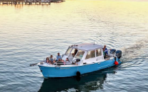
Party BoatFlipper Finders Bachelorette Boat
Private BYOB charters built for bachelorette groups: cruise the creeks, beach the boat on a sandbar and swim. Every boat has a Bluetooth speaker, so bring the playlist (no glass).
Everything you need to stay current on Folly Beach
Party boats, sandbars, Center Street nights and big beach houses — everything you need to plan a Folly Beach bachelorette party the bride will never forget.
Last Splash Before the Bash
Folly Beach gives you a real beach bachelorette without the high-rise resort feel. The island is small and walkable, so your crew can go from the sand to a BYOB party boat to a taco joint to a Center Street bar without needing a ride. It sits about 20 minutes from downtown Charleston, which makes it easy to add a night on King Street if the bride wants a little city energy too.
This Folly Beach bachelorette party guide is laid out the way you'll plan it: the activities first, then where to eat, the best bachelorette brunch spots on the island and finally where to stay with your whole group.
Things To Do
Get the bride on the water at least once. A private BYOB boat to a sandbar is the signature Folly Beach bachelorette activity, then fill the rest of the weekend with beach time, sunsets and a night out on Center Street.

Party BoatPrivate BYOB charters built for bachelorette groups: cruise the creeks, beach the boat on a sandbar and swim. Every boat has a Bluetooth speaker, so bring the playlist (no glass).
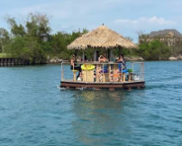
Tiki BoatA custom tiki catamaran that's perfect for photos. Book the whole boat for your crew, bring your drinks and cruise for dolphins, sandbars and sunset with the bride front and center.
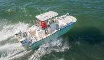
Private TourPrivate-only bachelorette trips with a three-hour sweet spot for swimming, sandbar games and a toast to the bride. Ask the captain to pass Outer Banks filming spots for a fun photo op.
Folly's nightlife is packed into a few walkable blocks. Start with rooftop drinks at sunset, then hop between live music bars and beach dives. Matching tanks and a sash are basically required.
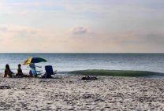
Beach DaySet up camp near the pier with a big umbrella, a speaker and bride-themed floats. Alcohol isn't allowed on Folly's beaches, so save the bubbly for the boat or the house, and pack out everything you bring.
Walk out from the north end of the island for golden-hour group photos with the lighthouse behind the bride. Wear comfy shoes: it's a sandy walk.
Dinner & Drinks
Big groups do best at laid-back spots with outdoor seating. Call ahead for anything over eight, and plan your group dinner early in the evening so you can hit Center Street afterward.
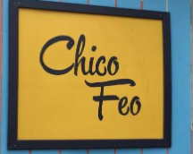
TacosAn open-air, backyard-party vibe with tacos, Cuban sandwiches, cold drinks and live music. It's open late, which makes it a perfect first or last stop of the night.
A funky island favorite with creative, globally inspired dishes and great cocktails. It's a fun, low-key group dinner before a night out.
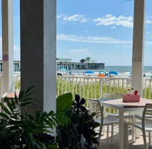
OceanfrontA lively oceanfront spot at the Tides hotel. The name and the view make it an easy pick for bride-squad photos with the pier behind you.
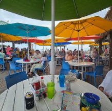
On the PierIsland-style eats like coconut shrimp and tiki tacos, served right at the Folly Beach Pier with ocean views all around.
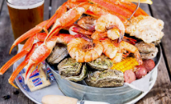
SeafoodA classic Folly seafood stop for she-crab soup, steamed seafood and buffalo shrimp. It's casual, messy and great for a big hungry group.
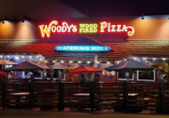
Late NightThe late-night lifesaver. Grab a couple of pies on the walk home, or order to the beach house after the bar crawl.
Mimosas Required
The morning after calls for Bloody Marys and something greasy. These are the best places for a bachelorette brunch on Folly Beach. Get there early, because weekend waits are real.
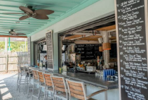
Cocktail BrunchCreative brunch plates and big-city cocktails in a beach town, served every day, not just weekends. The chicken and waffles is the move. This is the most "bachelorette" brunch on the island.
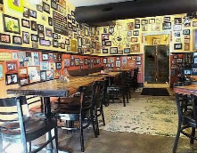
Breakfast ClassicFolly's best-known breakfast spot, with huge breakfast burritos, eggs Benedict with fried green tomatoes and sweet potato pancakes. It's the cure for a big night out.
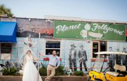
Bloody MarysA no-frills island dive with a Southern breakfast, a pour-your-own coffee bar and an award-winning breakfast Bloody Mary. It's hair of the dog, Folly style.
Home Base
For most bachelorette groups, a big beach house near Center Street wins. Everyone stays together, you can walk to the bars and there's no parking stress. If a few of the girls want hotel perks, the island's oceanfront hotel sits right at the pier.
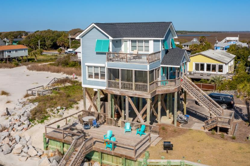
Best for GroupsLook for 5+ bedroom rentals within walking distance of Center Street, ideally with a pool or big porch for pregame photos. Being able to walk home after the bar crawl is worth it.
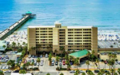
Oceanfront HotelThe island's full-service oceanfront hotel, next to the pier, with ocean-view balconies, a beachfront pool and Pinky's on site. It's great for smaller crews or for the bride and her maid of honor.
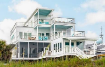
SplurgeIf the budget allows, an oceanfront house means the beach is steps from your door. Local agencies like Charleston Coast Vacations by Dunes Properties manage many Folly rentals.
Not every trip needs a sash. If you're planning a relaxed getaway with friends instead, check out our Folly Beach girls weekend guide.